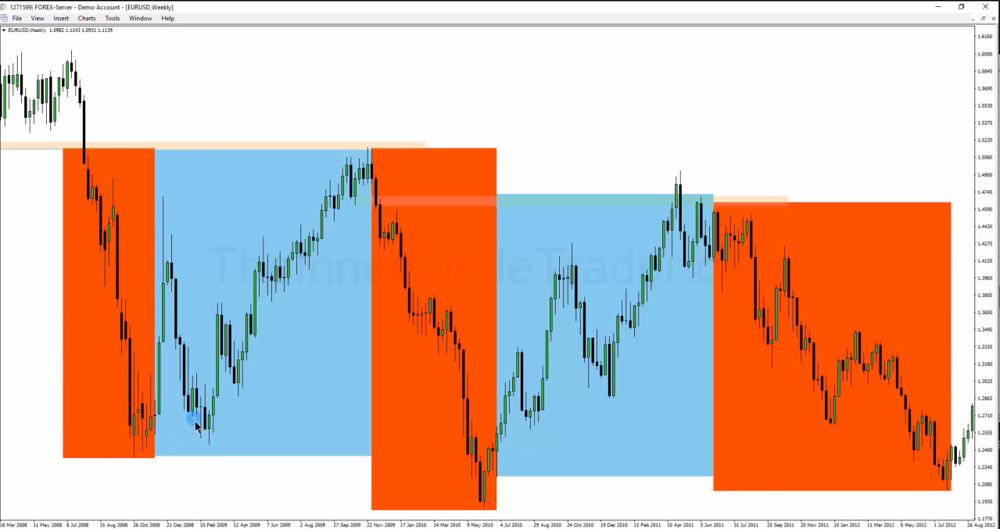

Institutional Order Flow (Body vs Wick)
Inhalt
- Kernregeln
- Wick-C.E. als Body-Grenze — "no bodies buried" (Live-Trade 2026-08-10)
- Wick-Counting: Reentry vs. Sellside/Buyside-Liquidity (Kurz Notizen)
- Candle-Charakter als Signal
- MOC-Order-Flow-Bestätigung (Candlestick-only, 2026-Ergänzung)
- "Mohawk"-Wick — Toleranzregel für Wick-Ausbrüche (2026-Ergänzung)
- Order-Flow-Testeinsatz (Single-Contract-Probe, 2026-Ergänzung)
- Hedge-Book-Mechanik (2016er Video-Ergänzung)
- Verwandt
Institutional Order Flow (Body vs Wick)
Kernregel für die Lesart von Preisreaktionen an einer PD Array: Das relevante (institutionelle) Volumen steckt in den Candle Bodys, nicht in den Wicks — ein Liquidity Run muss deshalb nicht zwangsweise über die Wicks laufen.

Die Haupt-Liquidität liegt bereits in den Candle-Bodys — ein Run muss deshalb nicht zwingend über die Wicks laufen; Wicks dürfen einen OB nicht komplett überschießen.
Kernregeln
- Wicks dürfen einen Order Block nicht komplett überschießen — auch wenn der Body darunter/darüber closed, darf der Wick nicht vollständig über die Referenz-Candle hinausgehen.
- Passiert es doch (Wick durchbricht komplett), muss der Orderflow geprüft werden: gab es ein CISD oder einen Shift?
- Nach einem Sellside-Sweep ist das nächste logische Ziel die Buyside — respektiert der Preis dabei einen Bullish OB über die Bodys (auch wenn die Wicks kurz durchgehen), bleibt das Setup gültig.
- Markt bewegt sich "back and forth": Liquidity nehmen → PD Array erreichen/nutzen → Gegenseite Liq nehmen → wiederholt sich.

Back-and-forth-Prinzip: hin und her, sobald Liquidität und eine PD Array (oder die gegensätzliche Liquidität) genommen wurden.
Wick-C.E. als Body-Grenze — "no bodies buried" (Live-Trade 2026-08-10)
Die operative Zuspitzung der Body-vs-Wick-Regel aus Navigating High Resistance Liquidity Run Conditions (Source): Ein relevanter Wick wird gegradet (C.E. = Mittelpunkt einzeichnen) und dient danach als Body-Grenze, nicht als Preis-Grenze.
- Bullish: "I don't want to see any bodies buried south of its consequent encroachment level." Preis darf ins Wick hineinstechen ("it can flirt with the lower wick") — ein Body-Close unter dem Wick-C.E. ist der Bruch. Spiegelbildlich bearish.
- Bricht ein Body doch durch, ist die Idee nicht sofort tot, aber die unmittelbar nächste Candle muss sofortige Bereitschaft nach oben zeigen; bevorzugt ein Close wieder über dem Level. Passiert das nicht, ist die Position auf dem Weg zum Stop.
- Noch stärkeres Signal als der C.E.-Reclaim: ein Close über dem Opening Price der Candle, die durchgebrochen ist ("if it closes above 29.873,75 … then it should resume going higher").
- Die Levels bilden eine Verteidigungs-Kaskade von oben nach unten: Wick-C.E. #1 → Wick-C.E. #2 ("PDA number two") → der darunterliegende Swing Low, direkt unter dem der eigene Stop sitzt. Erst wenn alle drei fallen, war die Prämisse falsch.
- Ist Preis auf Seite, ist das beste Verhalten, den Wick gar nicht erst zu nehmen ("it won't take out that low, it'll just rip higher").
Wick-Counting: Reentry vs. Sellside/Buyside-Liquidity (Kurz Notizen)
Wie viele Wicks ein Low (bzw. High) bilden, entscheidet über die Lesart:
- 1 Wick/Low (z.B. 5-Min) → aggressiver Reentry: darunter wird keine relevante Liquidity vermutet.
- 2 Wicks/Lows → darunter liegt Sellside-Liquidity, ein Retracement nach oben wird erwartet. (Spiegelbildlich für Highs: 2 Wicks = Buyside-Liquidity darüber, Retracement nach unten erwartet.)

Candle-Charakter als Signal
- Candles mit großen Wicks und schlagartiger Bildung sind oft Stop Raids, um Liquidity zu nehmen.

- Wichtige Fragen zur Orderflow-Qualität: Wird Liquidity schnell und explosiv genommen oder muss sich Preis hart und mühsam vorarbeiten? Werden die PD Arrays respektiert? Ist genug Kraft/ Bewegung im Markt vorhanden? Ist das nicht gegeben, gilt: Finger vom Markt lassen.
- Market Structure Switch: Zeigt sich ein MSS entgegen dem eigenen Bias (z.B. bullish MSS trotz bearishem Bias), sollte das eigene Momentum mitswitchen — dann nach höheren Preisen suchen (und umgekehrt).

- Ein Swing High/Low, das energetisch (mit Kraft, via MSS/BOS) genommen wird, ist ein positives Zeichen dafür, dass der Move weitergeht.
MOC-Order-Flow-Bestätigung (Candlestick-only, 2026-Ergänzung)
Regel für die Bias-Bestätigung ausschließlich über Candlesticks — keine Indikatoren, kein Volume Profile, kein Level 2, keine Heatmaps, kein Wyckoff, keine Pitchforks:
- Candle rallyt in ein (Inversion-)FVG hinein.
- Sie berührt dessen C.E. (Consequent Encroachment) nicht.
- Sie closed unterhalb ihres eigenen Lows, wobei genau dort eine Volume Imbalance liegt.
Sind alle drei Punkte erfüllt, gilt der bearishe Bias als bestätigt (spiegelbildlich: Rally in ein Gap, C.E. nicht berührt, Close über dem eigenen High mit VII → bullish bestätigt). Praxisbeispiel und Einbettung ins Setup: Market on Close (MOC) Macro Model.
Schlägt diese Regel in der Praxis fehl, ist laut Quelle fast immer der Bias falsch angenommen worden — nicht die Regel selbst defekt. Siehe Signal-Following & Crowd Liquidity Risk.
"Mohawk"-Wick — Toleranzregel für Wick-Ausbrüche (2026-Ergänzung)
Ein Wick, der kurz außerhalb einer PD-Array-Grenze auftaucht, während die Candle-Bodys auf der "richtigen" Seite bleiben — benannt nach der Optik (schmaler Wick, Bodies "frisiert" außen dran vorbei). Ursprünglich am IFVG beobachtet: Bodies bleiben komplett außerhalb/oberhalb der IFVG-Zone, nur der Wick taucht kurz hinein — gilt als bullisches Bestätigungssignal für einen Reversal, weil die Bodies "nicht in die Zone wollen" und dort folglich Verkaufsdruck fehlt. Spiegelbildlich für bearishe Reversals (Bodies bleiben unterhalb).
Generalisiert auf Range-Grenzen (aus [[2026-08-07 - Case Study With NonFarm Payroll & NQ Futures (Source)|Case Study With NonFarm Payroll & NQ Futures (Source)]]): dieselbe Toleranzregel gilt auch am Rand einer BISI-/SIBI-Range — Preis darf kurz mit dem Wick über die Range-Grenze hinauslaufen ("wie ein Kind, das beim Ausmalen ein kleines Stück über den Rand hinaus malt"), solange kein Body außerhalb schließt. Erst ein Body-Close jenseits der Grenze widerlegt die Range; ein reiner Wick-Ausbruch macht sie nicht ungültig und die darauf aufbauende Erwartung (z.B. Rallye-Fortsetzung) bleibt gültig.
Order-Flow-Testeinsatz (Single-Contract-Probe, 2026-Ergänzung)
Vor dem eigentlichen Einstieg einen einzelnen (Micro-)Kontrakt platzieren, um am realen Order Flow zu lesen, ob der antizipierte Level hält — ausdrücklich auch am Demo-Konto möglich, wenn kein Live-Konto verfügbar ist. Erst wenn diese Rückmeldung (Preis respektiert das Level, PD Arrays bilden sich wie erwartet) passt, wird die Position aufgebaut. Quelle: Market Review NQ July 31, 2026 (Source).
Hedge-Book-Mechanik (2016er Video-Ergänzung)
Aus dem Begleitvideo: Banken fahren gleichzeitig ein Long- und ein Short-Buch. Ein scharfer Gegen-Wick nach einem Order-Block-Retest muss deshalb kein neues Signal sein — oft ist es nur das Glattstellen der Gegenposition (Unwinding), während das Hauptbuch unangetastet bleibt. Erkennbar am Wick-zu-Body-Retracement-Muster, siehe Mitigation Block.
Verwandt
Was zeigt hierher 41
- 2022-02-16 - 2022 ICT Mentorship Episode 9 (Source)Quellen
- 2022-02-25 - 2022 ICT Mentorship Episode 12 (Source)Quellen
- 2022-05-04 - 2022 ICT Mentorship Episode 23 (Source)Quellen
- 2022-05-11 - 2022 ICT Mentorship Episode 26 (Source)Quellen
- 2026-07-29 - Predicting Session Low & High With Executions (Source)Quellen
- 2026-07-31 - Market Review NQ July 31, 2026 (Source)Quellen
- 2026-08-04 - ICT Price Action Chronicles - Market On Close Macro (Source)Quellen
- 2026-08-05 - ICT Price Action Chronicles - MOC Crushing The Buying & Selling Pressure Myth (Source)Quellen
- 2026-08-07 - Case Study With NonFarm Payroll & NQ Futures (Source)Quellen
- 2026-08-10 - Navigating High Resistance Liquidity Run Conditions (Source)Quellen
- Algorithmic Order FlowKonzepte
- Buy & Sell ProgramKonzepte
- CISD (Change in State of Delivery)Konzepte
- Essentials To ICT Market Structure (Source)Quellen
- Filling The Numbers (4 Level pro Tag)Konzepte
- ICT 2022 - Episode 06 Institutional Orderflow (Source)Quellen
- ICT 2022 - Episode 08 Institutionel Orderflow (Source)Quellen
- ICT Gems - How Price Behaves At Specific Times (Source)Quellen
- ICT Gems - How to Trade the Final Hour Macro (Source)Quellen
- ICT Gems - London Opening Range + Macros (Source)Quellen
- IFVG (Inverse Fair Value Gap)Konzepte
- Implied Dealing RangeKonzepte
- Katalog (Original)Meta
- Institutional Order Flow (Source)Quellen
- Institutional SponsorshipKonzepte
- Kurz Notizen (Source)Quellen
- ÄnderungsprotokollMeta
- Market Maker Trap - False BreakoutKonzepte
- Market Maker Trap - False FlagKonzepte
- Market Maker Trap - Head & ShouldersKonzepte
- Market on Close (MOC) Macro ModelModelle
- MentorShip 2025Synthese
- Missed Entry Trade Management PlaybookModelle
- Month 03 (Source)Quellen
- Order BlockKonzepte
- Propulsion BlockKonzepte
- Rejection BlockKonzepte
- Smart Money Concepts (SMC)Konzepte
- Trading All Time Highs (ATH)Konzepte
- Trading Complex Opening RangesModelle
- Volume Imbalance (VII)Konzepte